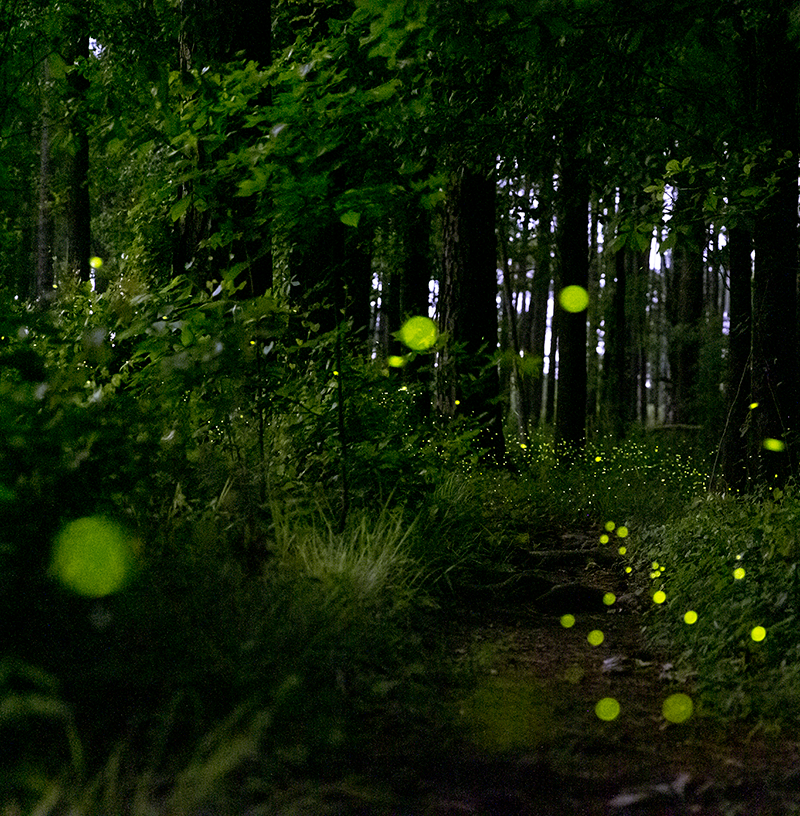
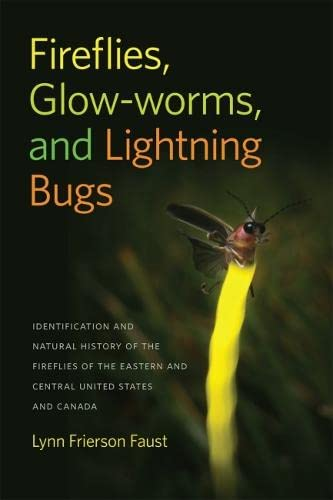

further
further reading
 For a deep and poetic behind-the-scenes peek at our work on the collective behavior of fireflies, I warmly recommend Vanessa Gregory's Bright Flight story in Harper's Magazine, March 2022.
 For a thorough exploration of the biology and ecology of fireflies, a few essentials:
- Lynn Faust's Fireflies, Glow-worms, and Lightning Bugs
- Sara Lewis's Silent Sparks
- Ben Pfeiffer's firefly.org
For immersive and inspiring photography:
- Mac Stone's National Geographic story
- Radim Schreiber's fireflyexperience.org
For the peer-reviewed scientific content (open-access):
- Synchrony in Photinus knulli (Interface 2022)
- Self-organization in Photinus carolinus (Science Advances 2021)
- 3D trajectories from 360-degree cameras (Interface 2020)
For even more on firefly collective behavior:
- The New York Times' perspective by Sabrina Imbler
- NPR's All Things Considered
- Smithsonian Magazine's piece by Courtney Holden